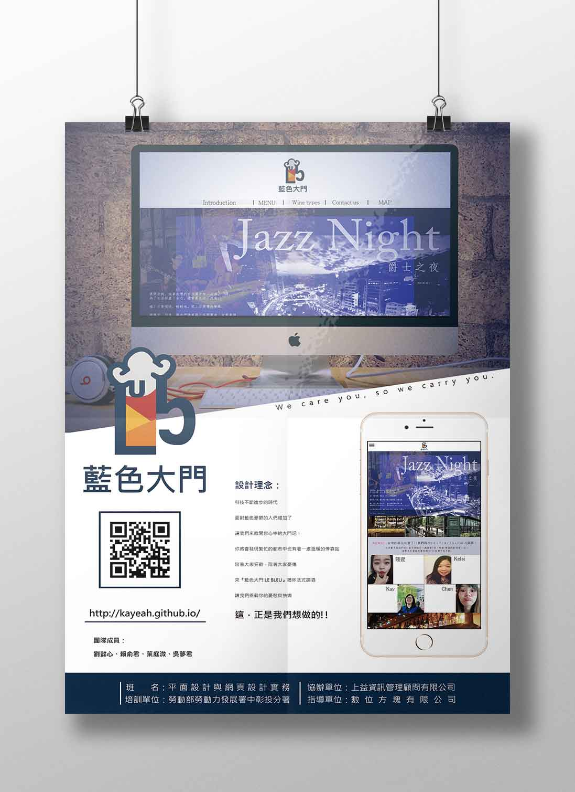
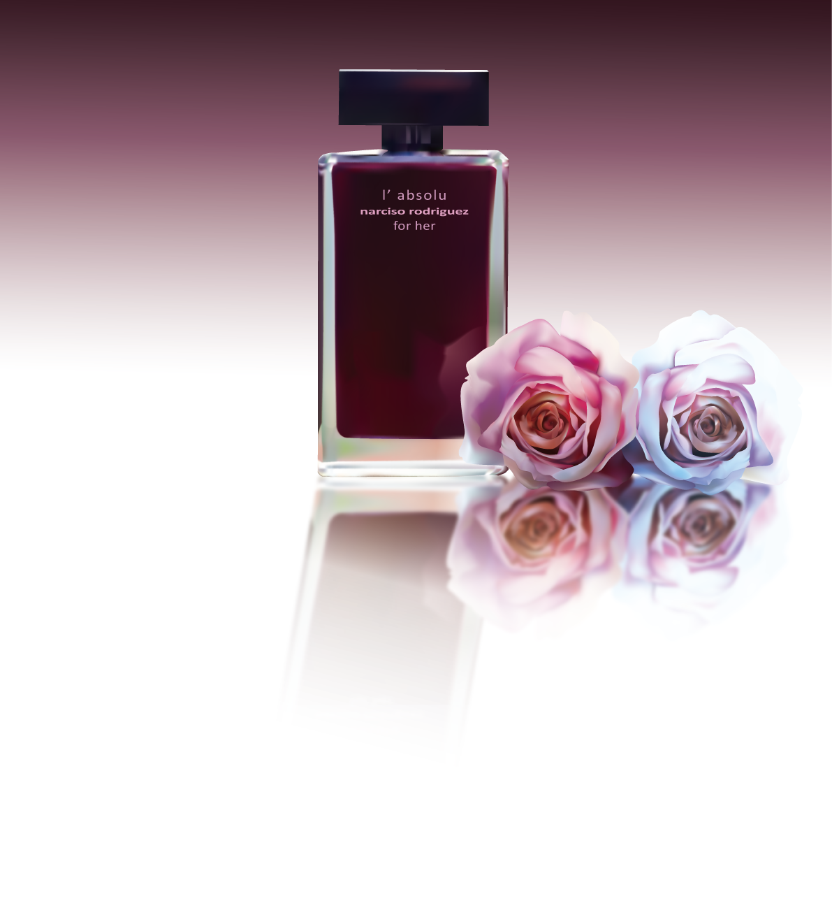
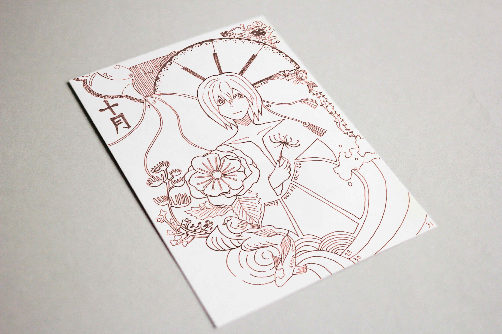

每朵花、每個人、每種愛在生命面前都是平等的，有各自的盛開凋落、各自存在的理由。
百花因為彼此存在差異而齊放，人生也因為擁抱不同而變得精采。希望每個人都能活得自由自在，找到自己生而為人的價值和意義。"> 
艾瑞克是一名從小患有妥瑞氏症的孩子。上課時，身體會不自覺抖動、喉嚨發出怪聲， 老師同學用異樣眼光看他，爸媽也為此成天吵架，某夜，難過又自卑的艾瑞克，終於受不了而逃出家門......
希望透過此繪本，讓大家了解妥瑞氏孩子的內心世界，接納彼此的不同，更要認識自己，發覺自己的獨有天賦。">  
About Me
YE TING WE
關於我
我是葉庭溦，1994年冬天生，今年22歲。在家排行老大，上有一個老母，下有兩個弟妹。國二父親因病去世，但也讓我更珍惜現在所擁有的。家庭雖不富裕但生活簡單和樂。
學習歷程 Stay hungry, Stay Foolish
畢業於弘光科大應用英語系，輔修文化創意產業系。上大學後給自己下了學習“第二專長”的戰帖，需要比別人多花一倍時間學習外系的課程，因此學分常常爆滿或衝堂，時間分配與規劃十分重要。獨自修習課程時，常常會遇到必須與陌生人分組的時刻，鼓起勇氣搭訕別人是每天要練習的，養成了開朗大方不害羞的個性，因為這樣認識了很多很有才華的外系同學，從他們身上學到很多東西，也認知到自己的不足。應外本科並沒有因為副系而荒廢，成績總能保持在前幾名的水準，大三幸虧如此而能優先選擇到知名食品企業的外貿部實習，學習國貿相關事務、翻譯文件、關心國際大小事、上臺報告...，度過一段非常充實的實習生活。因為太喜歡上課，也修了一些非必修課程，有時甚至會去旁聽整個學期、或到隔壁學校聽感興趣的講座，沒有學分也無所謂，學習對我來說就是這樣快樂的事！
社團生活 United is strength
大二接手系學會的幹部，從辦活動的過程中也學到很多團隊合作、與他人溝通的技巧，了解一個活動從無到有，必須倚賴非常多人的努力付出才做的到。當美宣的日子裡，常常為了做道具在學校待到很晚才回家，但因為是喜歡做的事，雖然辛苦卻從不喊累。除了道具以外，一場成功的表演活動最重要的其實在於“人”。道具設計的再好，沒有人跟你一起做也沒用。曾為了找齊幫手把所有學弟妹的line 加過一輪，細細了解每個人的行程狀況，集結足夠人手共同製作道具，規劃安排人力及道具跑位，或是和人交流想法、討論製程、甚至是吵架談判，在團隊合作中每每都能讓我從中發現值得學習或需要改進的地方，感謝這些寶貴的活動經驗讓我的大學時光增添許多光彩。
未來規劃 Whatever is worth doing is worth doing well
今年六月從大學畢業成為社會新鮮人，幾經考慮後沒有馬上進入職場，而是報名了職訓局的平面廣告與網頁設計班，精進自己的專業能力，並接觸到動畫與網頁前端等等全新的領域。在練習切板的過程中，發現網頁前端的有趣之處，如有搞不懂的地方，我會抱著追根究柢的精神，下課後回家繼續研究到三更半夜，搞定才睡得著。也感謝大學四年在應英系的學習，讓我除了老師上課教的東西以外，還能藉由自己的語言專長自行在網路上搜尋國外的教學範例來練習。所以我明白到：沒有任何過程會是白費的，所經之路都成為我成長的養分，讓我更茁壯、更健康。
在未來的職場生涯，只求自己的表現能盡善盡美、全力以赴，對社會帶來更多的貢獻。感謝您撥空閱讀我的自傳，希望能有機會與您面談。
Technical Skills
Photoshop
Illustrator
Web Design
Flash
Dreamweaver
Language
Chinese
English
Taiwanese
Japanese